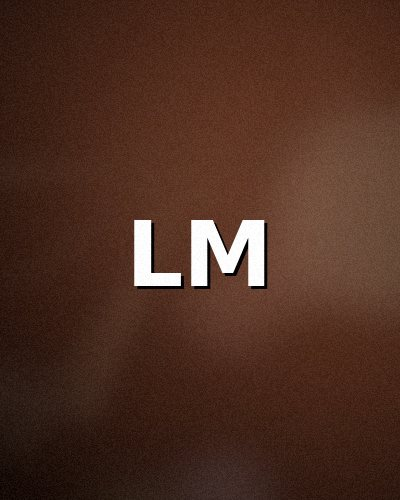
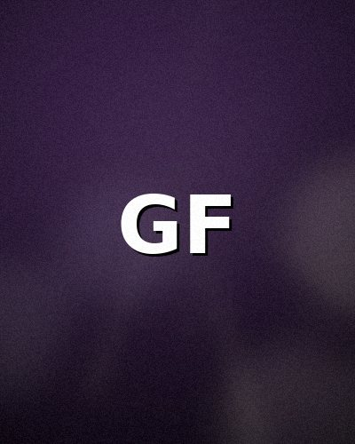
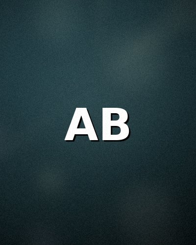
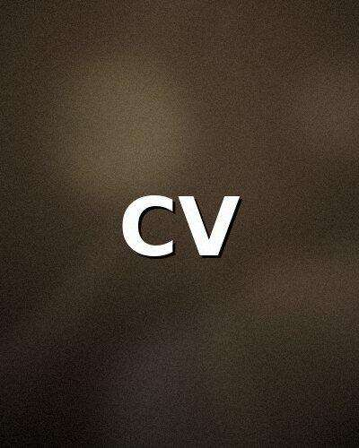
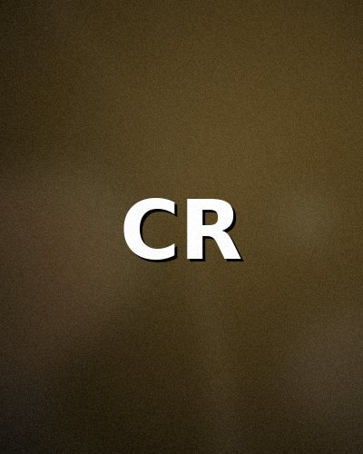
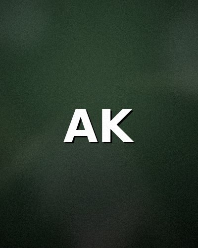
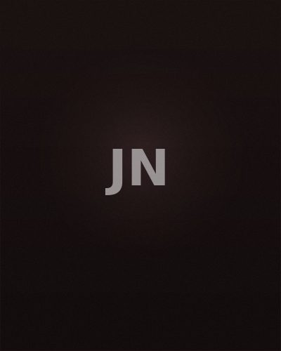

Marco Rinaldi
Director
Author of award-winning films such as Il confine invisibile and Terre lontane, Marco Rinaldi is among the most appreciated Italian directors of his generation. He has won two Nastri d'Argento and one David di Donatello.
XXIV Edition — 2026

Director and Screenwriter
Lucia Mancini is one of the most authoritative voices in contemporary Italian cinema. Born in Rome in 1962, she made her directorial debut in 1991 with the feature film Le stanze vuote, which earned her the David di Donatello for best first film. Over a thirty-year career, she has directed twelve feature films and numerous documentaries, exploring themes of identity, memory and the transformations of Italian society. Her films have been presented at major international festivals, including Venice, Cannes and Berlin. In 2018 she received the Golden Lion for lifetime achievement at the Venice Film Festival. A lecturer in directing at the Centro Sperimentale di Cinematografia, Mancini is a reference point for new generations of Italian filmmakers.
The five jurors called to evaluate the films in competition in the section dedicated to Italian cinema.
Director
Author of award-winning films such as Il confine invisibile and Terre lontane, Marco Rinaldi is among the most appreciated Italian directors of his generation. He has won two Nastri d'Argento and one David di Donatello.
Film critic
Renowned film critic for the Corriere della Sera, Sofia Bellini contributes to Cahiers du Cinéma Italia and Cineforum. She is the author of essays on neorealism and contemporary Italian cinema.

Actress
Star of over twenty films and major theatre productions, Giulia Ferretti received the Coppa Volpi at Venice in 2022. She has worked with directors such as Sorrentino, Garrone and Ferro.

Producer
Founder of the production company Luce Nuova Films, Alessandro Bianchi has produced over forty works including feature films, short films and television series, with distribution across Europe.

Screenwriter
Successful screenwriter, Chiara Valentini has written the scripts for films such as Notte di vetro and L'ultimo capitolo. She won the Solinas Prize in 2019 and collaborates with leading Italian productions.
Five international film professionals make up the jury for the competition dedicated to works from around the world.
Film critic
French critic and journalist, editorial director of Les Inrockuptibles Cinema. Author of monographs on Agnès Varda and Claire Denis, she is an authoritative voice in the European critical landscape.

Director
Spanish director known for his social and political cinema. His film La frontera won the Jury Prize at the San Sebastián Festival in 2023. His works are distributed in over thirty countries.

Producer
Polish producer based in Berlin, founder of East Bridge Films. She has produced over twenty films across Poland, Germany and France, bringing award-winning works from Cannes and Locarno to wider audiences.

Actor
British-Nigerian actor, star of acclaimed films such as A Quiet Storm and The Other Side. He received a BAFTA nomination for best leading actor in 2024.
Screenwriter and Director
Japanese director and screenwriter, her debut feature Shizuka na Machi won the Grand Prix at the Cannes Film Festival — Un Certain Regard in 2021. Her cinema explores everyday life with a unique sensitivity.
The Jury of the B.A. Film Festival operates in accordance with the official festival regulations, ensuring transparency, impartiality and rigour in the evaluation of works in competition. Each juror examines all selected films in their section during the festival days.
Evaluation criteria — Films are evaluated on the basis of several fundamental criteria: quality of direction, originality of screenplay, acting performances, cinematography, editing, soundtrack and the overall ability of the work to communicate with the audience. Particular attention is given to the coherence of the artistic vision and innovation in cinematic language.
Voting process — At the end of the screenings, the jury meets in plenary session under the guidance of the Jury President. Deliberations are secret and decisions are taken by majority vote. In the event of a tie, the President's vote is decisive. Results are communicated exclusively during the awards ceremony.
Awards presented by the jury:
The main award, given to the best feature film in competition.
Award for best direction, recognising the vision and narrative ability of the director.
Award for the best male and female performance in the works in competition.
Special jury award for a work that stands out for originality and artistic courage.
The only award decided directly by spectators through voting during screenings.